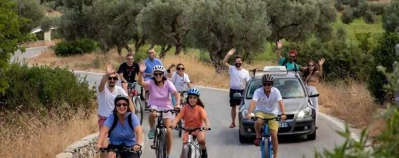

Zwaar – en zwaarder dan Therma
Per fiets naar de hot springs is al behoorlijk zwaar, maar nog makkelijk vergeleken met een fietstocht naar Zia.
Dit is alleen mogelijk voor echte mountainbikers, wielrenners of mensen die hun grenzen willen verleggen. Voor iemand die thuis af en toe een rondje fietst is het niet te doen.